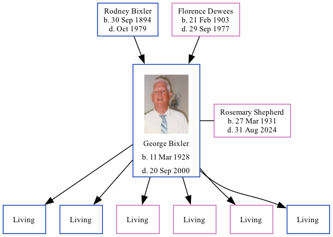

Rev George Edward Bixler 1928 - 2000 [ Home ] | [ Calendar ] | [ Surnames Index ] | [ Family History ]The 5th of 6 children of Rodney Bixler and Florence Dewees George Bixler , the fifth cousin once-removed on the mother's side of Nigel Horne , was born in Owen, Indiana, USA on Mar 11, 19281,2,3,4 and. He married Rosemary Shepherd (with whom he had 6 surviving children Michael , Dennis , Brenda , Rita , Carolyn and Donald ) in Clay, Indiana, USA on Oct 13, 19515 .
Throughout his life, he lived on Braysville Road, Clay, Indiana on Apr 3, 19302 ; and in Lafayette, Indiana on Apr 1, 19403 .
He died on Sep 20, 2000 in Brazil, Indiana1 and was buried at Fairview Cemetery, 1160 South County Road 550 East, Bowling Green, Indiana after Sep 20, 20006 .
Parents Rodney Jay was born on Sep 30, 1894Florence May was born on Feb 21, 1903Citations Social Security Death Index - Findmypast US Census 1930 - Findmypast (was age 2 and the son of the head of the household) US Census 1940 - Findmypast (was age 12 and the son of the head of the household) United States Marriages - Findmypast United States Marriages - Findmypast Find A Grave http://www.findagrave.com Media George Bixler - headstone George Edward Bixler US Census 1940 - USC/1940/1455776744 United States Marriages - FS/MAR/40542388/1 Social Security Death Index - USBMD/SSDI/333260719 Family Tree Map
Generated by ged2site . Last updated on Feb 28, 2025